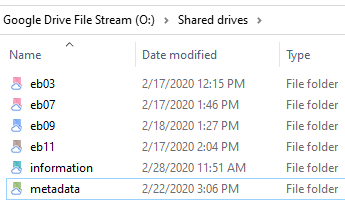
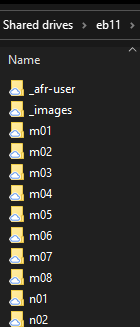

ebnn Repositories
The eb03, eb07, eb09, and eb11 repositories contain all files necessary to creating textual data from page images of the Encyclopedia Britannica.

Each print edition has its own repository for files used in the OCR process. The repositories are stored on Google Drive and are named like the print editions themselves. We do not work directly with Google Drives. Instead, we copy them to external hard drives that we backup to Google Drive File Stream using SyncBack Free.
Each repository contains two folders in addition to all of the section folders.

- The _afr-user folder is where we save the custom dictionaries and user files for use with ABBYY FineReader. There is one set of user files for each edition.
- The _images folder contains the image files needed for each section. Original page images are copied from the archive folder and organized into sections that are stored here.
- When the OCR process is complete, the docx output files are stored in the page folder of the outputs repository.
Finally, each page section folder also includes the page-inventory file for that section.